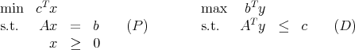
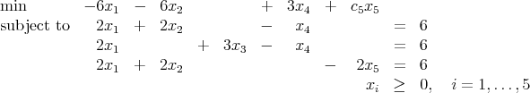
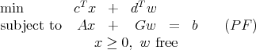
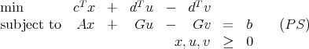

MATP6640/DSES6770
Linear Programming
Spring 2012
Midterm Exam, Friday, April 20, 2012.
Please do all four problems. Show all work. No books or calculators allowed. You may use any
result from class, the homeworks, or the texts, except where stated. You may use one sheet of
handwritten notes. The exam lasts 110 minutes.
Throughout, the standard primal-dual LP pair is

where A is m × n and the vectors are dimensioned appropriately. The dual slack variables are
defined as s := c - AT y.
- (20 points)
Assume (P) and (D) are both feasible. Let i {1,…,n}. Show that either xi is
unbounded in the set of primal feasible solutions, or the dual slack si is unbounded in
the set of dual feasible solutions, but not both.
- (35 points)
Let the LP (P) be

- (5 points) Does there does exist a basic feasible solution with x1, x2, and x3 basic.
- (5 points) Find the basic feasible solution with x1, x3, and x5 basic.
- (7 points) Find the basic feasible solution with x2, x3, and x4 basic. What would
be the corresponding dual solution when using the simplex algorithm?
- Now assume the basic feasible solution in part 2c is optimal.
- (5 points) What can you say about c5?
- (5 points) Assume c5 = 0. Show that the set of primal optimal solutions is
unbounded.
- (8 points) Assume c5 = 4. Show there exist multiple dual optimal solutions.
Which primal variables xi can be positive in an optimal solution? Which dual
slacks si can be positive in an optimal solution?
- (10 points)
Every polyhedron is the feasible region for an LP, for example min{0T x : x }. Every
linear programming problem can be converted to an equivalent one in the standard
form (P). Every LP in standard form has an extreme point. Does it follow that every
polyhedron has an extreme point? Prove or give a counterexample.
- (35 points.)
The linear program

has free variables. Splitting the variables leads to an equivalent linear program of the form
(P):

- (10 points) Assume (PF) has an optimal solution (x*,w*). Show that (PS) has
an unbounded set of optimal solutions.
- (10 points) What is the dual problem to (PS)? (Your dual problem should be of
the form (D), with free variables and inequality constraints.)
- (10 points) What does the result of part 4a imply about the set of feasible solutions
to the dual problem to (PS)? Verify this conclusion for your formulation of the
dual.
- (5 points) Would you advise applying an interior point method to solve the
reformulation (PS)? Justify your answer.